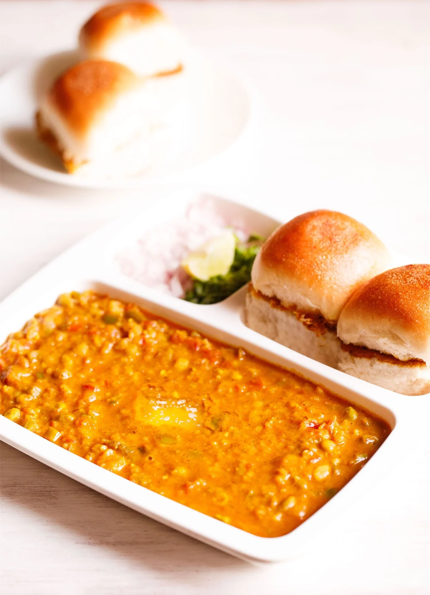

Go Back To Homepage
Pav Bhaji

More on Pav Bhaji
Pav bhaji is an iconic dish from Mumbai and hugely popular all over India as a street food.
In Hindi and Marathi languages, the word “Pav” is for bread rolls. “Bhaji” means vegetables or a vegetable based dish (dry or gravy) in the Marathi language. Since both the bhaji (vegetable gravy) and pav (dinner rolls) are served together, hence the name “Pav Bhaji„.
Ingredients Required
- 3 medium-sized potatoes
- 2 cups of water
- 1 cup of green peas
- ½ tablespoon ginger-garlic paste
- 2 large green chile peppers, chopped
- 2 teaspoons vegetable oil
- 1 teaspoon cumin seeds
- 1 large onion, finely chopped
- 2 medium tomatoes, finely chopped
- 1 teaspoon pav bhaji masala, or to taste
- ½ teaspoon chili powder, or to taste
- salt to taste
- 1 tablespoon chopped fresh cilantro for garnish
Steps
- Pour 2 cups water into the bottom of a pressure cooker. Place a trivet into the pressure cooker and turn the heat on high. Add potatoes, and green peas in a single layer in the pressure cooker and lock the lid.
- Cook over high heat until the pressure regulator reaches 15 psi, 5 to 10 minutes. Remove from heat. Allow pressure to drop naturally, 10 minutes. Unlock and remove lid. Remove vegetables and smash.
- Meanwhile, grind ginger-garlic paste and green chile peppers together in a mortar and pestle until well mashed together.
Heat oil in a skillet over medium heat and fry cumin seeds until fragrant, about 1 minute. Add garlic-chili paste and saute for 1 to 2 minutes. Add finely chopped onions and cook until soft and lightly browned, 3 to 5 minutes. Continue to cook until soft, stirring occasionally, about 5 minutes. Add tomatoes and a little water.
- Simmer over low heat until mixture thickens, 5 to 10 minutes. Season with pav bhaji masala and a little chili powder.
- Stir in boiled smashed vegetables and simmer until flavors meld, about 10 minutes. Season with salt to taste and serve sprinkled with fresh cilantro.